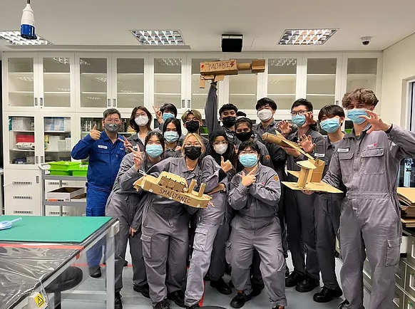

This website contains the documentation of assignments and projects that I would go through in my this elective module, Digital Fabrication and Prototyping.
It also contains some information about me (see below) and my thought processes throughout this module. Nevertheless, I would want to enjoy myself in this module.

Hello, I'm Valarie Goh and currently a Year 2 student in Singapore Polytechnic studying under the Diploma of Chemical Engineering. My current class is DCHE/FT/2B/05, and I stay in the Northeast of Singapore, in the Sengkang West estate.
You can contact me via my telegram: @gkx_valarie
or
my email: valariegkx_11@ichat.sp.edu.sg
My interest is playing sports like badminton🏸 and softball⚾️ and during my free time I would play some mobile games like Call of Duty and Mobile Legend🎮.

I grown interest in 3D printing through my previous module from Introduction in Chemical Product Design in my course of studies last semester where my team and I was tasked to make the egg drop challenge with 3D Printer and we made it as the egg did not break.
I would like to design my own prototypes through 3D Printing, and Laser Cutting to be able to create an aesthetic prototype that captures the customer's eyes👀
Nevertheless, I would want to learn more so that I can apply it better in the future like for my FYP Projects in Year 3:)